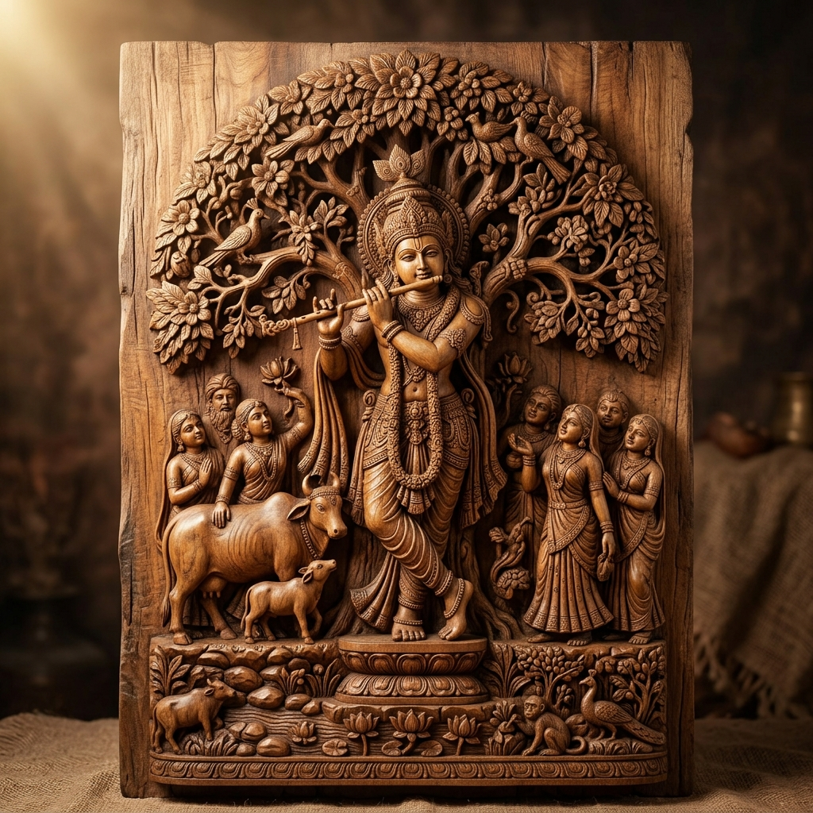
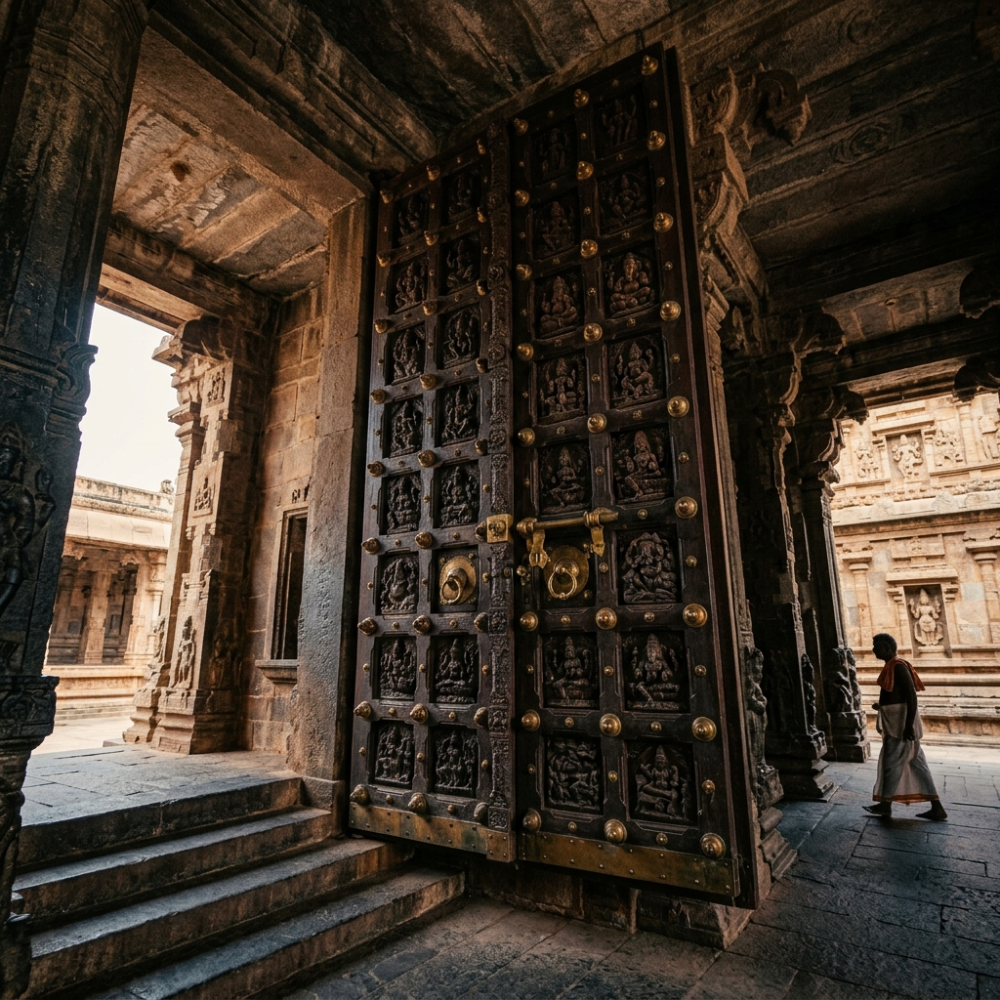
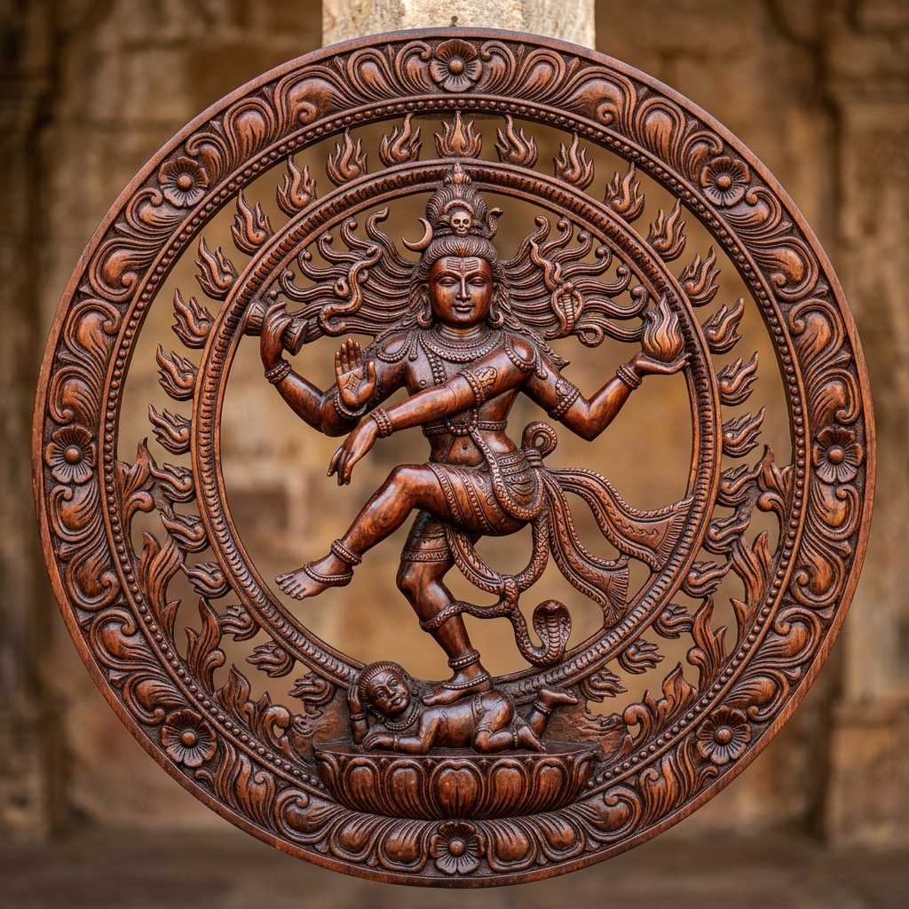

Divine Collection
The Sacred Gallery
Explore our collection of meticulously hand-carved devotional wood art. Use the tabs below to filter the carvings by sacred category. Click on any creation to open its detailed view and dimensions.


